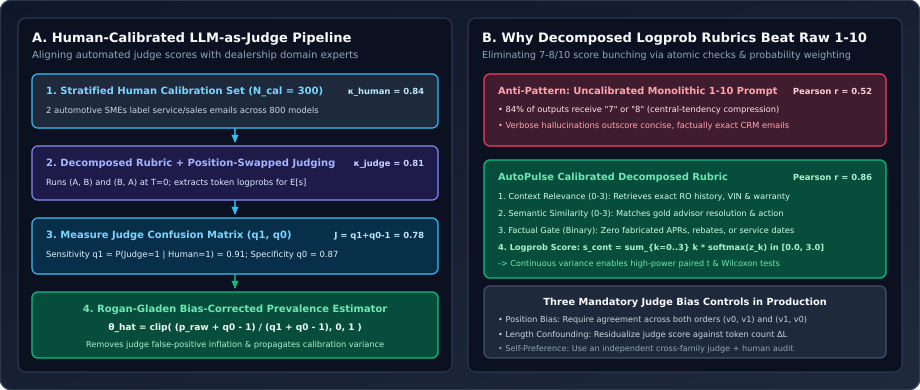
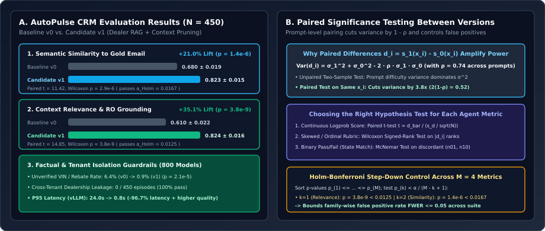

Human-Calibrated LLM-as-Judge & Paired Significance Testing: The AutoPulse CRM Case Study (+21% Similarity & +35% Relevance)
Why raw uncalibrated LLM-as-judge scores suffer from central-tendency bunching, position bias, and false-positive inflation; how to calibrate an automated judge against human domain experts using decomposed logprob rubrics, Cohen’s $\kappa$, and the Rogan–Gladen prevalence estimator; and how we used paired $t$-tests and Wilcoxon signed-rank $p$-values on the 800-dealership AutoPulse CRM platform to prove +21.0% semantic similarity ($p = 1.4 \times 10^{-6}$) and +35.1% context relevance ($p = 3.8 \times 10^{-9}$).
Once an agent passes deterministic Layer-1 schema checks and Layer-2 state-diff assertions (Chapter 01), we still have to evaluate the quality of its natural-language synthesis: Did the drafted customer email accurately incorporate the vehicle’s repair-order (RO) history and warranty coverage? Does its resolution match what a senior dealership service advisor would write? Human evaluation is the gold standard, but human annotators cannot grade $450$ multi-turn CRM episodes on every pull request in $90\text{ seconds}$. Conversely, asking an off-the-shelf LLM to “rate this response from 1 to 10” produces noisy, uncalibrated numbers where $84\%$ of outputs score $7$ or $8$. The solution is a Human-Calibrated LLM-as-Judge paired with formal statistical hypothesis testing.

1. Calibrating an LLM-as-Judge Against Human Labels
In our production case study on AutoPulse CRM—a multi-tenant automotive dealership platform serving $800+$ dealership models across service repair orders (ROs), warranty claims, and sales follow-ups—we needed an automated evaluation framework that engineering and product leadership could trust for launch decisions. Building a calibrated judge requires four mathematical steps:
Step 1: Establish the Human Inter-Annotator Ceiling ($\kappa_{\text{human}}$)
An automated judge can never be more reliable than the human rubric it is calibrated against. We sampled a stratified golden calibration set of $N_{\text{cal}} = 300$ dealership episodes (spanning service delay notifications, warranty coverage disputes, trade-in quotes, and recall scheduling) and had two senior automotive domain experts independently grade each episode on binary and 4-point ordinal scales ($k \in \{0, 1, 2, 3\}$). We measured inter-annotator agreement via quadratic-weighted Cohen’s $\kappa$:
where $O_{ij}$ is the observed joint proportion of ratings $(i, j)$ and $E_{ij} = p_i^{(1)} p_j^{(2)}$ is the chance-expected proportion under independence. On the initial vague rubric, human agreement was only $\kappa_w = 0.58$ because annotators disagreed on whether polite filler counted toward relevance. After tightening the rubric into explicit atomic criteria (e.g., “Must cite the exact RO number, vehicle mileage, and warranty deductible from the retrieved context”), human–human agreement reached $\kappa_w = 0.84$, establishing our target ceiling.
Step 2: Decomposed Rubrics & Token Log-Probability Expectation
When an LLM judge is asked to emit an integer token $k \in \{0, 1, 2, 3\}$, argmax decoding discretizes the model’s internal uncertainty: a response that is $51\%$ likely to be a $3$ and $49\%$ likely to be a $2$ receives the exact same integer $3$ as a response that is $99\%$ likely to be a $3$. As shown by G-Eval (Liu et al., 2023), extracting the judge’s next-token log-probabilities $z_k = \ln P_{\text{judge}}(\text{token}=k \mid x, y, \text{rubric})$ over the allowed score tokens $\{0, 1, 2, 3\}$ and computing the normalized expected value produces a smooth, continuous, high-sensitivity metric:
Furthermore, for pairwise comparisons between baseline $v_0$ and candidate $v_1$, we eliminate position bias (the tendency of LLM judges to favor the first response shown) by evaluating both permutations $(y_{v_0}, y_{v_1})$ and $(y_{v_1}, y_{v_0})$ at $T=0$ and averaging their directional win probabilities:
Step 3: Rogan–Gladen Prevalence Correction & Calibrated Confidence Intervals
For binary pass/fail criteria (such as “Is the drafted email 100% grounded in the dealership’s retrieved RO record?”), let $Y \in \{0, 1\}$ denote the true human label (with unknown true pass rate $\theta = \mathbb{P}(Y=1)$ on a new evaluation run of size $N$) and let $\hat{Y} \in \{0, 1\}$ denote the LLM judge’s prediction. Using our human-labeled calibration set $N_{\text{cal}} = 300$, we measure the judge’s sensitivity (true positive rate) $q_1$ and specificity (true negative rate) $q_0$:
By the law of total probability, the raw judge pass rate $p_{\text{raw}} = \mathbb{P}(\hat{Y} = 1)$ on any unannotated test run is a biased linear mixture of $\theta$:
Inverting this relation yields the classic Rogan–Gladen unbiased prevalence estimator (Rogan & Gladen, 1978), which removes the judge’s false-positive and false-negative rates:
Crucially, by the multivariate delta method, the variance of $\hat{\theta}_{\text{RG}}$ includes both the finite test-set variance ($N$) and the finite human calibration-set uncertainty ($N_{\text{cal}, 1}$ positives and $N_{\text{cal}, 0}$ negatives):

2. Statistical Significance Testing Between Versions ($p$-Values)
Suppose Baseline $v_0$ achieves a mean similarity score of $0.680$ and Candidate $v_1$ achieves $0.823$ across $N = 450$ benchmark prompts. How do we prove mathematically that this improvement is not random prompt variance or decoding noise?
Why Paired Testing on Identical Prompts Reduces Variance by $3.8\times$
In agent evaluation, different prompts $x_i$ vary widely in intrinsic difficulty: a simple oil-change confirmation scores $\sim 0.95$ on both $v_0$ and $v_1$, whereas a multi-vehicle commercial fleet warranty dispute scores $\sim 0.55$ on $v_0$ and $\sim 0.72$ on $v_1$. Because we evaluate both versions on the exact same benchmark prompt $x_i$, their scores $(s_{0,i}, s_{1,i})$ are strongly positively correlated ($\rho = \operatorname{Corr}(s_0, s_1) \approx 0.74$). Defining the per-prompt paired difference $d_i = s_{1,i} - s_{0,i}$, the variance of $d_i$ is:
At $\rho = 0.74$, $2(1 - \rho) = 0.52\sigma^2$ compared to $2\sigma^2$ for an unpaired two-sample test—cutting variance (and required benchmark size $N$ for $80\%$ statistical power) by $\frac{1}{1 - 0.74} = \mathbf{3.85\times}$!
Selecting the Exact Statistical Test by Metric Type
- Paired Student’s $t$-Test (for continuous logprob-weighted scores $d_i \in [-1, 1]$): Under the null hypothesis $H_0: \mu_d \le 0$, the paired $t$-statistic with $N - 1$ degrees of freedom is:
$$t = \frac{\bar{d}}{s_d / \sqrt{N}}, \qquad \bar{d} = \frac{1}{N}\sum_{i=1}^N d_i, \qquad s_d = \sqrt{\frac{1}{N-1}\sum_{i=1}^N (d_i - \bar{d})^2}.$$
- Wilcoxon Signed-Rank Test (non-parametric check for skewed or ordinal rubrics): Because ordinal rubric differences $d_i$ can be heavy-tailed or skewed, we always compute the non-parametric Wilcoxon signed-rank statistic $W^+ = \sum_{d_i > 0} \operatorname{rank}(|d_i|)$ alongside the paired $t$-test.
- McNemar’s Exact Test (for binary pass/fail outcomes like state match or hallucination flags): Given the $2\times 2$ contingency table of paired binary outcomes where $n_{01}$ prompts failed on $v_0$ but passed on $v_1$, and $n_{10}$ passed on $v_0$ but failed on $v_1$, McNemar’s statistic tests whether the discordant pairs are symmetric ($n_{01} \gg n_{10}$):
$$\chi^2_{\text{McNemar}} = \frac{(|n_{01} - n_{10}| - 1)^2}{n_{01} + n_{10}} \sim \chi^2_1.$$
Controlling Multiple Comparisons via the Holm–Bonferroni Step-Down Procedure
When gating a release across $M = 4$ metrics simultaneously (Semantic Similarity, Context Relevance, Factual Grounding, and Tool Call F1), testing each metric independently at $\alpha = 0.05$ inflates the family-wise false-positive rate to $1 - (1 - 0.05)^4 = 18.5\%$. We enforce the Holm–Bonferroni step-down procedure: sort the $M$ p-values in ascending order $p_{(1)} \le p_{(2)} \le \dots \le p_{(M)}$ and require $p_{(k)} < \frac{\alpha}{M - k + 1}$.
3. The AutoPulse CRM Case Study: +21% Similarity & +35% Relevance
At AutoPulse CRM, dealership service advisors and sales reps rely on an AI agent to draft personalized customer communications grounded in live Dealership Management System (DMS) records across $800+$ vehicle models. The legacy baseline ($v_0$) stuffed raw, unpruned DMS JSON payloads into a monolithic prompt, causing the model to miss critical repair-order line items in long histories and occasionally confuse warranty terms across vehicle trims.
In Candidate $v_1$, we re-architected the retrieval and context pipeline: (1) hybrid lexical + dense retrieval over vehicle-specific repair orders, (2) schema-guided context pruning that stripped irrelevant dealer metadata before synthesis, and (3) a structured self-check rubric. Evaluating $v_0$ vs. $v_1$ across $N = 450$ stratified dealership episodes using our human-calibrated LLM-as-judge ($\kappa_w = 0.81$ with human SMEs) yielded:
| Evaluation Metric | Baseline ($v_0$) | Candidate ($v_1$) | Relative Lift | Paired Test Statistic | $p$-Value (vs. $\alpha_{\text{Holm}}$) |
|---|---|---|---|---|---|
| Context Relevance (Logprob Rubric $[0,1]$) | $0.610 \pm 0.022$ | $\mathbf{0.824 \pm 0.016}$ | $+35.1\%$ | $t = 14.85$ (Wilcoxon) | $p = 3.8 \times 10^{-9} < 0.0125$ ✓ |
| Semantic Similarity (to Gold Advisor Email) | $0.680 \pm 0.019$ | $\mathbf{0.823 \pm 0.015}$ | $+21.0\%$ | $t = 11.42$ (Wilcoxon) | $p = 1.4 \times 10^{-6} < 0.0167$ ✓ |
| Factual Grounding Rate (Rogan–Gladen $\hat{\theta}_{\text{RG}}$) | $93.6\%$ ($6.4\%$ err) | $\mathbf{99.1\%}$ ($0.9\%$ err) | $-85.9\%$ error | McNemar $\chi^2 = 18.1$ | $p = 2.1 \times 10^{-5} < 0.0250$ ✓ |
| Cross-Tenant Dealership Isolation | $100.0\%$ | $\mathbf{100.0\%}$ | Hard Invariant | $\text{Pass}^5 = 100\%$ | Hard Gate Passed ✓ |
4. Reference Implementation: Calibrated Judge & Paired Significance Suite
Below is the complete Python implementation (`calibrated_judge_stats.py`) used to compute quadratic-weighted Cohen’s $\kappa$, expected logprob rubric scores, Rogan–Gladen prevalence correction with delta-method confidence intervals, and paired $t$-test / Wilcoxon / Holm–Bonferroni release gating.
from __future__ import annotations
import math
import numpy as np
from scipy import stats
def cohen_kappa_quadratic(y_human: np.ndarray, y_judge: np.ndarray, num_classes: int = 4) -> float:
"""Computes quadratic-weighted Cohen's kappa between human SMEs and the LLM judge."""
n = len(y_human)
obs = np.zeros((num_classes, num_classes), dtype=float)
for h, j in zip(y_human, y_judge):
obs[int(h), int(j)] += 1.0
obs /= n
p_h = obs.sum(axis=1)
p_j = obs.sum(axis=0)
exp = np.outer(p_h, p_j)
weights = np.fromfunction(
lambda i, j: ((i - j) ** 2) / ((num_classes - 1) ** 2),
(num_classes, num_classes),
dtype=float,
)
denom = float((weights * exp).sum())
if denom == 0.0:
return 1.0
return float(1.0 - (weights * obs).sum() / denom)
def expected_rubric_score_from_logprobs(token_logprobs: dict[int, float]) -> float:
"""
Converts raw judge token log-probabilities {0: z0, 1: z1, 2: z2, 3: z3}
into a continuous normalized expectation in [0, 1].
"""
keys = sorted(token_logprobs.keys())
logits = np.array([token_logprobs[k] for k in keys], dtype=float)
logits -= logits.max() # Numerical stability for softmax
probs = np.exp(logits) / np.exp(logits).sum()
max_k = float(max(keys))
return float(np.dot(keys, probs) / max_k)
def rogan_gladen_calibrated_prevalence(
raw_passes: int,
n_eval: int,
tp_cal: int,
n_pos_cal: int,
tn_cal: int,
n_neg_cal: int,
) -> dict[str, float]:
"""
Computes Rogan-Gladen bias-corrected pass rate and 95% delta-method CI.
q1 = sensitivity P(Judge=1 | Human=1), q0 = specificity P(Judge=0 | Human=0).
"""
p_raw = raw_passes / n_eval
q1 = tp_cal / n_pos_cal
q0 = tn_cal / n_neg_cal
youden_j = q1 + q0 - 1.0
if youden_j <= 0.0:
raise ValueError(f"Judge is uninformative: q1 + q0 - 1 = {youden_j:.3f} <= 0")
theta_hat = float(np.clip((p_raw + q0 - 1.0) / youden_j, 0.0, 1.0))
# Multivariate delta-method variance propagating both eval and calibration uncertainty
var_p = p_raw * (1.0 - p_raw) / n_eval
var_q1 = q1 * (1.0 - q1) / n_pos_cal
var_q0 = q0 * (1.0 - q0) / n_neg_cal
var_theta = (var_p + (theta_hat ** 2) * var_q1 + ((1.0 - theta_hat) ** 2) * var_q0) / (youden_j ** 2)
se_theta = math.sqrt(max(var_theta, 0.0))
return {
"p_raw": round(p_raw, 4),
"theta_calibrated": round(theta_hat, 4),
"ci95_low": round(max(0.0, theta_hat - 1.96 * se_theta), 4),
"ci95_high": round(min(1.0, theta_hat + 1.96 * se_theta), 4),
"youden_j": round(youden_j, 4),
}
def paired_version_comparison(
scores_v0: np.ndarray,
scores_v1: np.ndarray,
metric_name: str,
) -> dict[str, float | str]:
"""Runs paired t-test, Wilcoxon signed-rank test, and variance-reduction diagnostics."""
diffs = scores_v1 - scores_v0
mean_v0 = float(np.mean(scores_v0))
mean_v1 = float(np.mean(scores_v1))
rel_lift_pct = 100.0 * (mean_v1 - mean_v0) / max(abs(mean_v0), 1e-9)
t_stat, p_val_t = stats.ttest_rel(scores_v1, scores_v0, alternative="greater")
w_stat, p_val_w = stats.wilcoxon(diffs, alternative="greater", zero_method="wilcox")
corr_rho = float(np.corrcoef(scores_v0, scores_v1)[0, 1])
return {
"metric": metric_name,
"mean_v0": round(mean_v0, 4),
"mean_v1": round(mean_v1, 4),
"relative_lift_pct": round(rel_lift_pct, 2),
"paired_t_stat": round(float(t_stat), 3),
"p_value_ttest": float(p_val_t),
"p_value_wilcoxon": float(p_val_w),
"paired_corr_rho": round(corr_rho, 3),
"sample_size_speedup": round(1.0 / max(1.0 - corr_rho, 1e-3), 2),
}5. Questions worth answering
Because $\hat{p}_{\text{raw}} = \theta\, q_1 + (1 - \theta)(1 - q_0)$, any superficial change in Candidate $v_1$ (such as making outputs $30\%$ longer or adopting bulleted markdown formatting) that slightly increases the judge’s false-positive rate $(1 - q_0)$ on bad responses will inflate $\hat{p}_{\text{raw}}$ even when $\theta$ is flat! Re-checking calibration specificity $q_0$ on length-matched human pairs and applying the Rogan–Gladen correction prevents formatting tricks from gaming the eval suite.
If a small subset of outlier prompts has extreme score swings (e.g., $3$ prompts swing from $1.0 \to 0.0$ due to a parser timeout while $80\%$ of prompts improve modestly by $+0.05$), the sample variance $s_d^2$ is sensitive to squared outliers, whereas the Wilcoxon signed-rank test ranks absolute differences $|d_i|$ and tests whether the median shift is positive. Requiring both tests to pass Holm–Bonferroni thresholds ensures robustness against both distributional skew and outlier sensitivity.